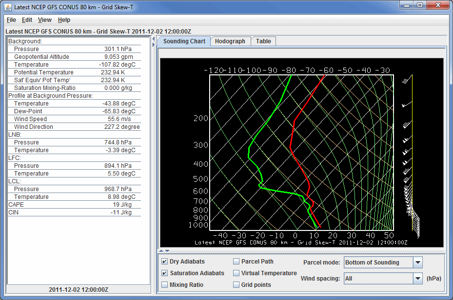
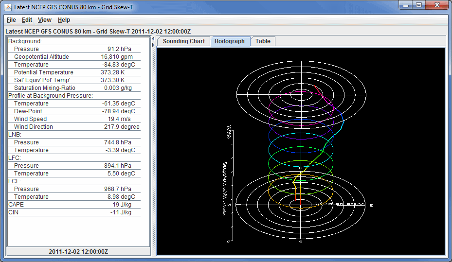
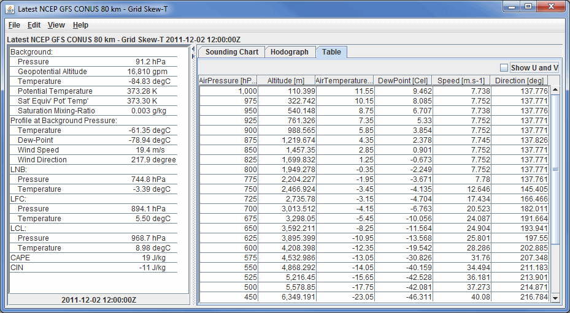

Overview
For 3D derived gridded data, one of the Fields that can be selected is Sounding Data (Temperature & dewpoint only or with true winds). In the Displays panel of the Layer Controls tab, there is a category for soundings. The three sounding display options are Grid Skew-T, Grid Stuve Display, and Grid Emagram Display. This display uses the model data to produce soundings, and their controls are similar to those for Point Data sounding display controls. The location of the sounding in the Main Display window can be changed by dragging the selector point to a different position on the map.
The example below is loaded from the 'Sounding Data (with true winds)' field. If 'Sounding Data (Temperature & dewpoint only)' was selected, then wind data will not be included in the display. Therefore, there will be no barbs along the side of the sounding in the Sounding Chart tab, the Hodograph tab will not be available, and there will be no wind information listed in the Table tab. For more information on what wind speeds correspond to each of the wind barbs in McIDAS-V displays, please see the table in the FAQ.
The Sounding Chart tab includes an aerological diagram (e.g., skew-T, Stuve, Emagram):

Image 1: Sounding Display of Model Data
Properties
- Time Animation Control - Controls the looping of displays through time. See Time Animation Control for more information. This will be available if more than one time was selected in the Field Selector.
- Dry Adiabats - Displays the dry adiabats on the Skew-T diagram.
- Saturation Adiabats - Displays the saturation adiabats on the Skew-T diagram.
- Mixing Ratio - Displays the mixing ratio lines on the Skew-T diagram.
- Parcel Path - Displays the path of a parcel of air lifted pseudo-adiabatically from the initial point to the top of the Skew-T diagram.
- Virtual Temperature - Displays the virtual temperatures of the environmental profile and pseudo-adiabatically lifted air-parcel.
- Grid Points - Plots grid points in the Main Display window. The grid point spacing will be related to the model resolution that selected in the Data Sources tab of the Data Explorer.
- Parcel mode - Specifies how the initial conditions of the pseudo-adiabatically lifted air-parcel are determined from the environmental sounding according to the mode indicated. This will affect how the LNB, LFC, LCL, CAPE, and CIN are calculated. The choices are:
- Bottom of Sounding - Determines the initial conditions of the parcel from the temperature and dewpoint at the level of highest pressure. The path will update whenever the profiles change.
- Below Cursor - Determines the initial conditions of the parcel from the temperature and dewpoint profiles by computing the pressure-weighted mean potential temperature and water vapor mixing-ratio of the atmosphere that lies below the cursor when the middle mouse button is pressed. Thus, pressing the middle button at 950 hPa for a sounding that starts at 1000 hPa will effectively mix the lower 50 hPa of the atmosphere and lift the resulting parcel starting at 975 hPa. The path will update whenever the profiles change and as the cursor is dragged.
- At Cursor Pressure - Determines the initial pressure, in-situ temperature, and moisture content of the parcel from the temperature and dewpoint profiles at the pressure of the cursor when the middle mouse button is pressed. The initial moisture content is determined from the dewpoint profile at the initial pressure. The path will update whenever the profiles change and as the cursor is dragged.
- At Cursor (Press, Temp) - The computed path of a lifted parcel is automatically updated when appropriate. The initial pressure and in-situ temperature of the parcel equal the pressure and temperature values under the cursor when the middle mouse button is pressed. The path will update whenever the profiles change and as the cursor is dragged.
- Wind spacing - Allows the user to control which wind levels are shown in the display.
- Consecutive Profiles - Allows for plotting both the current sounding, as well as the sounding of the next time step in one image. The temperature and dewpoint temperature profiles of the current timestep will be dashed, and the profiles of the next timestep will be displayed as solid lines. The current time's winds will be displayed directly to the right of the sounding, and the next timestep's winds will be shown to the right of that. This makes it easy to see how a profile will change through time. This will reduce the number of time steps in the loop by 1. This option will not make any changes to the display if only have one timestep is displayed.
A label above the sounding's chart shows the model, date, and time of the data. The user can modify the individual T and Td profiles on the skew T by clicking and dragging the profile lines. Changes in the parameter table to the left of the Skew-T will be made to reflect modifications made to the sounding.
The Hodograph tab shows a 3D hodograph display. Note that this tab is only included with the display if a Field that includes wind data was selected:

Image 2: Hodograph Display of Model Data
Properties
- Time Animation Control - Controls the looping of displays through time. See Time Animation Control for more information. This will be available if more than one time to display was selected in the Field Selector.
The hodograph is enabled if the plotted data includes wind fields. It can be rotated into 3D by right-clicking and dragging. The user can zoom in/out by holding down Shift and right-clicking and dragging up/down or by using the scroll wheel on the mouse. To reset the hodograph, use Ctrl+R.
The Table tab shows a table of all available values in the sounding. The user can invert the order of the table by double clicking on the name of a column (ex. AirPressure).:

Image 3: Table Display of Model Data
Properties
- Time Animation Control - Controls the looping of displays through time. See Time Animation Control for more information. This will be available if more than one time to display was selected in the Field Selector.
- Show U and V - Breaks the Speed and Direction categories up into the individual U (east-west) and V (north-south) components of the wind. This option will only be available if a sounding display with true winds is used.
Aerological Parameters
The table to the left of the sounding diagram contains aerological parameters determined from the atmospheric sounding displayed in the diagram. The following abbreviations are used:
- LCL: Lifting Condensation Level - The level at which a pseudo-adiabatically lifted air-parcel becomes saturated with water vapor.
- LFC: Level of Free Convection - The level at which the virtual temperature of a pseudo-adiabatically lifted air-parcel changes from being less than the environment's virtual temperature to being greater than the environment's virtual temperature.
- LNB: Level of Neutral Buoyancy - The level above the LFC at which the virtual temperature of a pseudo-adiabatically lifted air-parcel equals the environment's virtual temperature.
- CAPE: Convective Available Potential Energy - The area between the virtual temperature trace of the pseudo-adiabatically lifted air-parcel and the virtual temperature trace of the environment from the LFC to the LNB in which the parcel's virtual temperature is greater than the environment's (positive CAPE connotes convective development).
- CIN: Convective Inhibition - The negative of the area between the virtual temperature trace of the pseudo-adiabatically lifted air-parcel and the virtual temperature trace of the environment from the parcel's initial conditions to the LFC in which the parcel's virtual temperature is less than the environment's (negative CIN connotes initial positive work to lift the parcel).
Menus
Many of the menu items seen utilizing this display are standard options that can be found in the Menus section of the Layer Controls page. However, there is one option that is unique to this display.
The File menu has this unique option:
- Export Sounding Table to File... - Exports the data in the Table tab. This can be saved in Comma-Separated Values (CSV) format (*.csv) or in Excel format.
The Edit menu has these unique options:
- Reset Probe Position - Moves the probe in the Main Display window back to its initial location before it was moved.
- Reset Sounding - Reverts the sounding back to its initial configuration after any modifications have been made to it.
- Selector Color - Changes the color of the shape representing the location of the sounding in the Main Display window.
The View menu has these unique options:
- Sounding Chart - Allows for capturing an image or movie of the sounding and change many aesthetic preferences.
- Hodograph - Allows for capturing an image or movie of the hodograph and change aesthetic preferences related to the Main Display window.